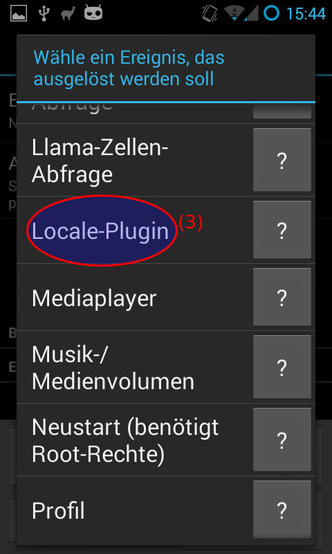

External Interfaces
Llama / Tasker / Locale
Apps like the ones mentioned above allow to execute actions based on external events. Those events may well be the connection to a WLAN, the entering of some area. Those events are pretty useful if combined with an FHEM instance. This is why andFHEM provides an external interface to those apps.
Sending commands
AndFHEM provides a UI for sending commands to FHEM. Just look for an andFHEM plugin in your favourite location aware switching app.(AndFHEM 2.1.4+)
Example: Llama
-
Open up Llama, click the rules tab and click on the plus icon to create a new rule.

-
Add a new event by clicking on the respective button.

-
Select Locale-Plugin as event type.

-
Select andFHEM command.

-
Enter the command you want to send to FHEM.

- Select the connection you want to use.
- Click save and enter the rest of your rule, i.e. conditions, ...
Triggering actions based on device states
You can trigger actions based on device states by adding the Device State Locale Plugin. You need to select a device and enter a desired device state. If the device state is found to match the desired state, the condition is met and an action is triggered. This plugin only works using Locale and Tasker.
Switching connections
Using a Locale Plugin you can switch to another AndFHEM connection. This can be used to select a connection based on an available WLAN connection or a network cell. (AndFHEM 2.7.0+)
Receiving device state change broadcasts
Tasker allows to receive Intents from external applications and trigger events based on the contents (see Tasker Documentation for details, AndFHEM 2.7.0+).
Broadcasts are only sent if GCM is enabled. The broadcast intents contain the following information:
| Broadcast-Aktion |
li.klass.fhem.constants.Actions.EXT_DEVICE_STATE_NOTIFY |
| ACTION |
deviceStateChange |
| DEVICENAME |
The name of the changed device, i.e. "mat_halogen" |
| STATE_NAME |
The name of the changed state. This is always uppercase and usually equals to "STATE". |
| STATE_VALUE |
The actual value, i.e. "on". |
Programmatic APIs
AndFHEM can be partially controlled using intents from external applications:
Sending commands
Send a command programatically to andFHEM.
| Class Name |
li.klass.fhem.service.intent.SendCommandIntentService |
| Action |
li.klass.fhem.constants.Actions.EXECUTE_COMMAND |
| Data |
Key: COMMAND
Value: The command to set (i.e. set abc on)
|
{kind=link}